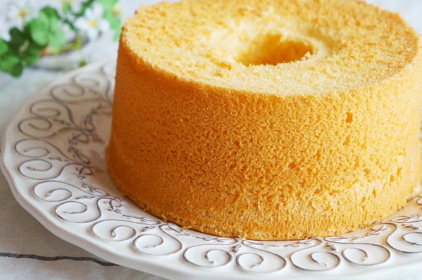

Home
Chiffon Cake

Description
Chiffon cake is a very light, airy foam cake that combines the delicate lift of an angel food cake with the rich flavor and moisture of a traditional oil-based cake.
Ingredients
- 2 cups sifted cake flour
- 1 ½ cups white sugar
- 1 tablespoon baking powder
- 1 teaspoon salt
- 7 large eggs, separated, divided
- ¾ cup cold water
- ½ cup vegetable oil
- 2 teaspoons vanilla extract
- 1 teaspoon lemon extract
- ½ teaspoon cream of tartar
Steps
- Preheat the oven to 325 degrees F (165 degrees C). Wash a 10-inch angel food tube pan in hot soapy water to ensure it is grease-free; dry well.
- Measure flour, sugar, baking powder, and salt into a sifter; sift into a bowl. Make a well; add egg yolks, water, oil, vanilla extract, and lemon extract to the well in the order listed. Do not beat.
- Beat egg whites and cream of tartar in a separate, large bowl until very stiff.
- Using the same beaters, beat egg yolk batter until smooth and light; pour slowly over egg whites. Gently fold mixtures together with a rubber spatula; do not stir. Pour batter into the angel food tube pan.
- Bake cake in the preheated oven for 55 minutes. Increase heat to 350 degrees F (175 degrees C) and continue baking until a toothpick inserted into the center comes out clean, 10 to 15 more minutes.
- Invert the pan onto a wire rack. Let cool completely before unmolding and frosting as desired.